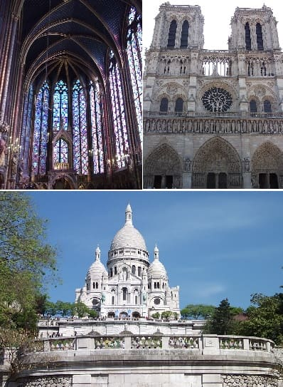

Paris is the capital and the most populated city of France with 12 million inhabitants if we counted the adjoining districts.
It is also known as the City of Light (to be one of the first to count on public lighting) and the largest destination in the world with 42 million annual visitors.
Among other monuments with the Eiffel Tower, Saint Chapelle, Notre Dame Cathedral, Basilica of the Sacred Heart (right images), Arc de Triomphe (down image), The invalids, the Pantheon or the defense.
It is essential visit neighborhoods as popular as Montmartre, also known as the neighborhood of the painters, les Halles where you can give very good walks,
Or Montparnasse where you will find the tallest tower in Paris and you will be able to enjoy with the beautiful views from the last floor.
Also near Paris there are large leisure and entertainment parks such as DisneyLand Paris and FuturoScope which make it more attractive when it comes to moving the national tourism.
It is an icon of Europe especially among the Americans, since next to Rome they make of the most wanted cities. It is a source of inspiration in numerous literary and theatrical works and
One of the most popular places to describe Europe in films especially in the USA.
 The word Paris unlike other cities that were dominion of the Romans does not take the name that they gave them if not of the
Celtic people who inhabited it. The Roman city that was in the same place was called Lutecia and the Gallic people of the Paris.
In the year 250 was Christianized by Rome and in 360 it happened to be called Paris. It is believed that at that time did not exceed 10,000 inhabitants.
The word Paris unlike other cities that were dominion of the Romans does not take the name that they gave them if not of the
Celtic people who inhabited it. The Roman city that was in the same place was called Lutecia and the Gallic people of the Paris.
In the year 250 was Christianized by Rome and in 360 it happened to be called Paris. It is believed that at that time did not exceed 10,000 inhabitants.
In the fourth century the Franks made capital of their kingdom after casting the Romans.
In the 9th century, defensive walls were built on the citadel, and in the 14th century the wall was enlarged. In the 11th century it had about 100,000 inhabitants, one of the largest in Europe.
In the sixteenth century actual town is beginning to be drawn.
Beginning with the French revolution, changes in the city begin notably and will be at the heart of the 19th century when Paris is fully developed
Since the emperor of that moment had the intention that Paris was the head of the European vanguard in architecture and design. Proof of this was that at the end of that century
it hosted the majority of the universal exhibitions and in one of them was presented the Eiffel Tower.
After these lines you can see an old map of Paris where you can appreciate the Ile of France in the center.

In the twentieth century Paris received an important improvement in its infrastructures with the incorporation of the metro to the city. In addition, the train stations were improved
on that time and some new stations like the one of Alexander III and the one of Lyons were built.
In the second world war Paris is taken quickly by the Germans and was a city that hardly had damages. However they happened a lot of robberies on the part of the Germans that after the war would be returned.
In the following centuries it was epicenter of the manifestations of France, first in favor of the independence of Algeria and one decade after the origin of the student revolts.
In the last decade of the twentieth century the city underwent notable improvements, renovating neighborhoods that were abandoned by the authorities and building new ones
such as La Defense district, headquarters of many European companies and most of French companies.
On the right you can see a picture in the district of the defense. Even in a office district where there are buildings very moderns there is the sprit of art of Paris.
 In addition to having the world's most famous museums such as the Louvre and Orsay also has one of the best education systems in the world.
Besides culture and art Paris is the capital of fashion and has the most expensive items on the market.
In addition to having the world's most famous museums such as the Louvre and Orsay also has one of the best education systems in the world.
Besides culture and art Paris is the capital of fashion and has the most expensive items on the market.
A great part of the European talent has been formed here, great thinkers like Voltair, writers like Victor Hugo, mathematicians like Descartes, painters like Renoir, etc.
These talents were in the 19th century from the French revolution where the great change came to France.
Due to the changes of minds and the new culture it explode in the French revolution. A lot of french people in these times reject his political system with the monarchy with inherit privileges,
and all the the bourgeoisie and the nobles.
In the right image you can see Montmartre district, where nowadays it is full of artists everyday painting and bringing his collection to sell to the public and tourists.
Paris is one of the best entertainment and leisure centers in France. It has numerous districts where there is enough movement until high 4 o'clock, at which time they close the majority of the locals.
The neighborhoods are very far from each other so before you leave you will have to know the plan.

© 2016 - All Rights Reserved - Diseñada por Sergio López Martínez
![[Valid RSS]](https://www.feedvalidator.org/images/valid-rss-rogers.png "Validate my RSS feed")